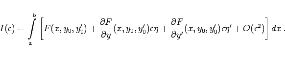
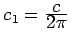

Inhalt Index DeskTop Bronstein

 Variationsrechnung Variationsaufgaben mit Funktionen einer Veränderlichen
Variationsrechnung Variationsaufgaben mit Funktionen einer Veränderlichen


Für die Lösung der einfachen Variationsaufgabe erhält man eine notwendige Bedingung auf folgende Weise: Zur Extremalen y0(x), die durch (10.12) charakterisiert ist, konstruiert man sogenannte Vergleichsfunktionen
mit einer zweimal stetig differenzierbaren Funktion , die den speziellen Randbedingungen genügt. Mit  wird ein reeller Parameter bezeichnet. Setzt man (10.13) in (10.11) ein, dann erhält man an Stelle des Funktionals I[y] die von
wird ein reeller Parameter bezeichnet. Setzt man (10.13) in (10.11) ein, dann erhält man an Stelle des Funktionals I[y] die von  abhängige Funktion
abhängige Funktion
| (10.14) |
und die Forderung, daß y(x) das Funktional I[y] zu einem Extremum macht, geht in die Bedingung über, daß  als Funktion von
als Funktion von  für einen Extremwert hat. Aus einer Variationsaufgabe wird dadurch eine Extremwertaufgabe, für die die notwendige Bedingung
für einen Extremwert hat. Aus einer Variationsaufgabe wird dadurch eine Extremwertaufgabe, für die die notwendige Bedingung
gelten muß.
Unter der Voraussetzung, daß der Integrand F als Funktion von drei unabhängigen Variablen entsprechend oft partiell differenzierbar ist, erhält man mit Hilfe seiner TAYLOR-Entwicklung
|  | (10.16) |
Die notwendige Bedingung (10.15) führt auf
| (10.17) |
und daraus folgt durch partielle Integration und Berücksichtigung der Randbedingungen für :
Aus Stetigkeitsgründen und da das Integral in (10.18) für jede der in Frage kommenden Funktionen verschwinden soll, muß
gelten. Die Gleichung (10.19) stellt eine notwendige Bedingung für die einfache Variationsaufgabe dar und heißt EULERsche Differentialgleichung der Variationsrechnung. Die Differentialgleichung (10.19) kann man auch in der Form
| (10.20) |
schreiben. Es handelt sich um eine gewöhnliche Differentialgleichung 2. Ordnung, wenn ist.
Die EULERsche Differentialgleichung vereinfacht sich in folgenden Spezialfällen:
| = | |||
| = | (10.22a) |
d.h.
als notwendige Bedingung für die Lösung der einfachen Variationsaufgabe im Falle .
| Beispiel A |
|
Für die kürzeste Verbindungslinie zweier Punkte P1(a,A) und P2(b,B) in der x,y-Ebene muß gelten: |
| (10.23a) |
Aus (10.22b) folgt für
| (10.23b) |
also , d.h., die kürzeste Verbindungslinie ist die Gerade.
| Beispiel B |
|
Läßt man einen Kurvenbogen |
| (10.24a) |
Für welche Kurve y(x) ist der Flächeninhalt am kleinsten? Mit folgt aus (10.22c): oder mit . Diese Differentialgleichung läßt sich durch Trennung der Variablen lösen, und man erhält
| (10.24b) |
die Gleichung der sogenannten Kettenlinie.
Die Konstanten c1 und c2 sind mit Hilfe der Randbedingungen y(a)=A und y(x)=B zu bestimmen. Das erfordert die Lösung eines nichtlinearen Gleichungssystems, für dessen Lösbarkeit weitere Untersuchungen notwendig sind.